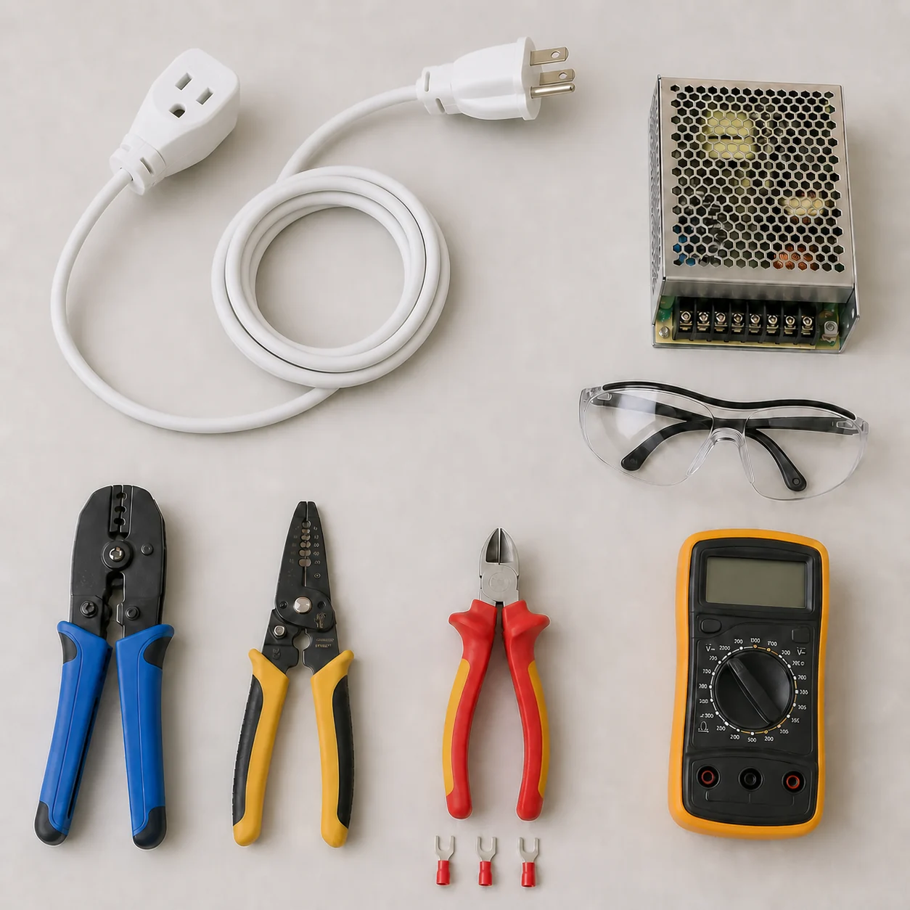
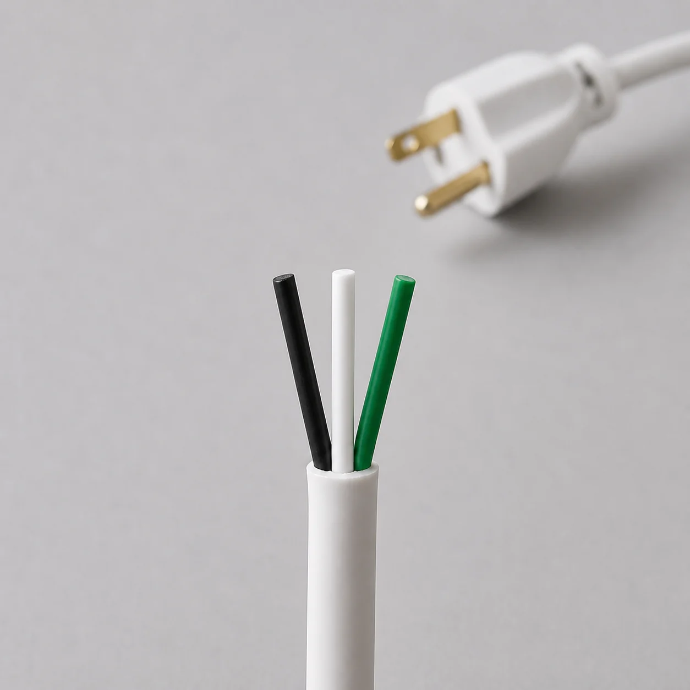
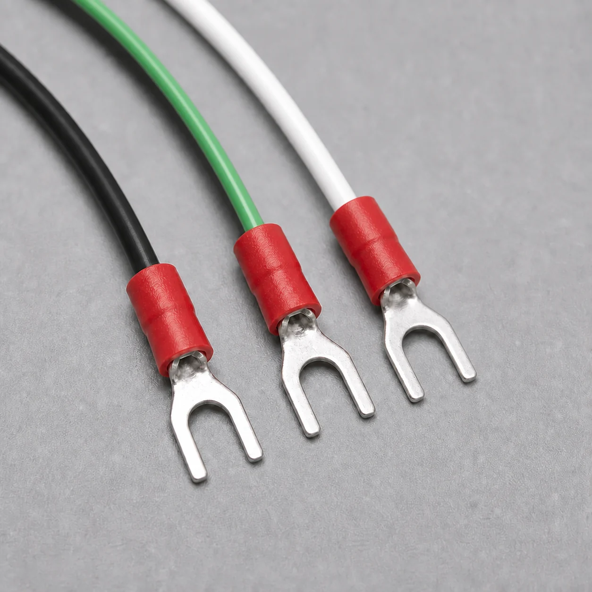
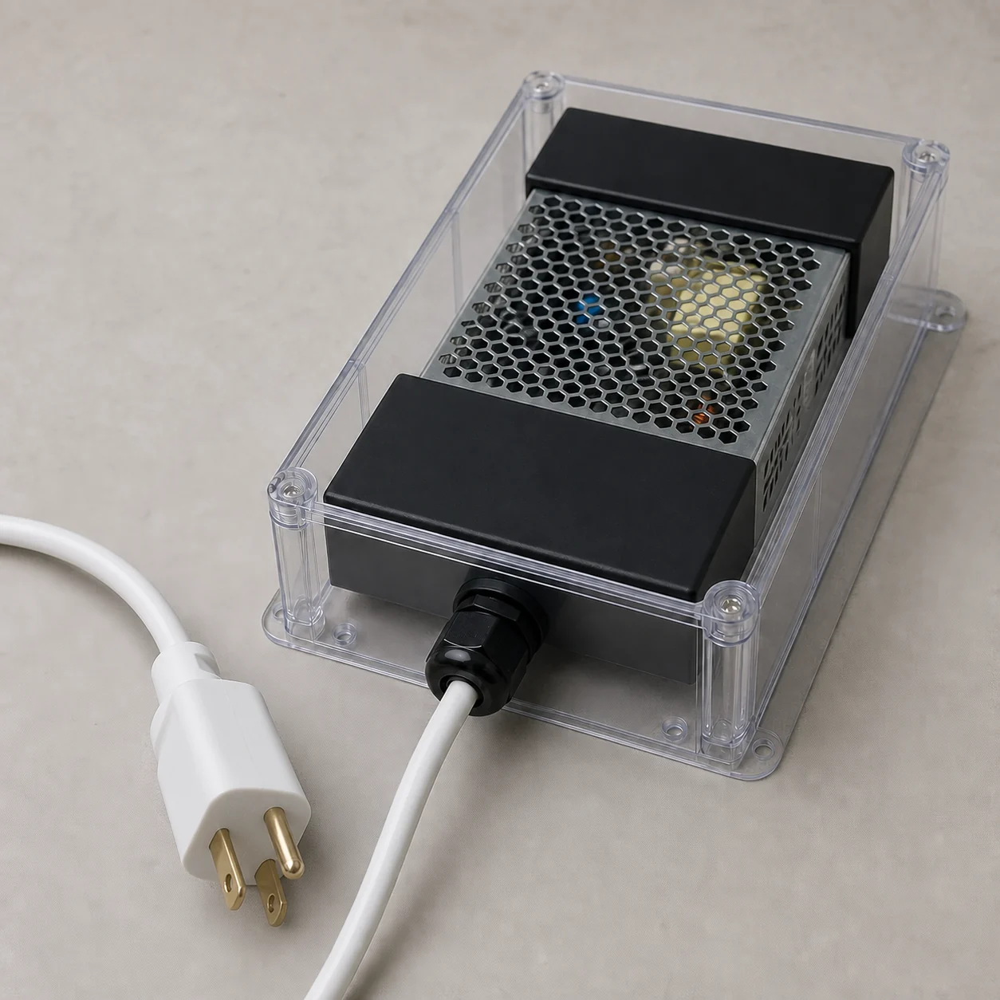

No manipula bornes de red ni una fuente energizada.
Capítulo 1 · Alimentación
Del enchufe a los 12 voltios
Preparar, proteger, revisar y medir; nunca improvisar con la red.
Resultado buscado
Dejar una fuente de 12 V mecánicamente protegida, con el cable sujeto por su cubierta exterior, los bornes de red inaccesibles y una primera medida registrada.
El PWM y el motor permanecen desconectados durante todo este capítulo.
Límite de seguridad
120 V AC pueden causar lesiones graves o la muerte. Sara puede reconocer piezas, leer etiquetas, fotografiar y completar el registro con todo desenchufado.
El corte, pelado, crimpado, conexión, revisión y primer encendido corresponden a una persona adulta competente.
Selecciona materiales, realiza conexiones y controla la primera prueba.
Ante una duda, daño, olor, ruido, calor, chispa o disparo de protección.
0 comprobaciones realizadas
Capítulo 1 · Mapa
La frontera entre red y baja tensión
Solo la fuente cruza de una zona a la otra.
Red 120 V · 60 Hz
Enchufe + cable
Fuente protegida
V− / V+ · 12 V DC
PWM · Capítulo 2
Zona de red
- Enchufe, cable y bornes L, N y tierra.
- Selector de rango 110/220, si la unidad lo incorpora.
- Debe quedar cerrada, sujeta y fuera del alcance.
Zona de 12 V
- Bornes V− y V+ de salida continua.
- Se comprueba primero sin PWM ni motor.
- No es la zona de red, pero un cortocircuito sigue siendo peligroso.
| Red local | En Colombia, la toma doméstica prevista para este proyecto es de 120 V AC, 60 Hz. Existen sistemas con 208 V entre fases o 240 V entre conductores activos: no se utilizarán para esta fuente configurada en rango bajo. |
|---|---|
| Fuente anunciada | 12 V, 10 A, 120 W. Son datos del material recibido/anuncio; deben confirmarse en la placa de características física. |
| Clavija y toma | La fotografía aportada muestra una clavija tipo B: dos láminas planas y un pin redondo de tierra. Solo se usará una toma compatible, con tierra funcional y sin adaptadores que anulen ese pin. |
| Conductores esperados | Para 120 V según RETIE: negro = fase, blanco = neutro y verde = protección. Los colores deben comprobarse en el cable físico; no se presuponen por la fotografía. |
Capítulo 1 · Puerta de entrada
Antes de tocar nada
Preparar una mesa segura y resolver los datos que todavía faltan.
1
Mesa de trabajo prevista
Referencia generadaVerificar material real

Abrir imagenReferencia generada adaptada a Colombia con extensión tipo B. No demuestra que las herramientas, toma ni protecciones reales sean adecuadas.
Verificaciones obligatorias
Fuente física: anotar fabricante, modelo y fotografiar completa su placa de características.
Manual real: confirmar rango de entrada, selector, sección de cable, tipo de terminal, longitud de pelado y par de apriete.
Protección: definir envolvente, cubrebornes, prensaestopa, ventilación y protección aguas arriba compatibles.
Horquillas: confirmar que el borne del modelo admite ese terminal. Tenerlas no demuestra compatibilidad.
Preparación comprobable
Capítulo 1 · Cable
Revisar el alargador real
Conservaremos el enchufe macho y retiraremos después el extremo hembra.
2
Alargador tipo B con toma de tierra
Foto del material aportado
 Abrir imagen
Abrir imagen
Fotografía del paquete aportado: la forma corresponde a tipo B con tierra usada en Colombia. Antes de modificarlo se inspeccionará la unidad física y su marcación.
- Sacar el enchufe de la pared. La persona competente mantiene a la vista los dos extremos.
- Desenrollar todo el cable. No trabajar con el alargador enrollado ni conectado a otra regleta.
- Leer sus marcas. Fotografiar tensión, corriente, sección, certificaciones y cualquier advertencia.
- Inspeccionar palmo a palmo. Buscar cortes, aplastamientos, calentamiento, empalmes, rigidez o decoloración.
- Comprobar la toma de tierra. El enchufe y la base deben tener contactos de protección y el cable deberá revelar tres conductores.
- Marcar qué se conserva. Etiqueta “CONSERVAR” junto al enchufe macho; etiqueta “CORTAR” junto a la base hembra.
No continuar hasta
Capítulo 1 · Preparación del cable
Cortar el extremo hembra
Esta operación la realiza la persona adulta competente, siempre sin tensión.
- Verificar otra vez el desenchufado. No basta con apagar un interruptor: el enchufe debe estar sobre la mesa.
- Cortar únicamente el extremo marcado. Hacer un corte limpio en cable sano, próximo a la base hembra pero sin afectar a la longitud útil prevista.
- Separar la base cortada. No podrá volver a utilizarse como alargador; etiquetarla y retirarla del banco.
- Examinar la sección. Deben verse exactamente tres conductores aislados dentro de la cubierta exterior.
- No pelar todavía “a ojo”. La longitud exterior dependerá del recorrido dentro de la envolvente y la individual dependerá del borne/manual real.
3
Aspecto esperado tras abrir la cubierta
Referencia generada

Abrir imagenReferencia generada. La fotografía real del corte debe añadirse al registro antes de continuar.
Capítulo 1 · Identificación
Identificar y verificar los tres conductores
Los colores orientan; las etiquetas y comprobaciones confirman.
NegroConductor de fase → borne L de la fuente
BlancoConductor neutro → borne N de la fuente
VerdeTierra de protección → borne con símbolo de tierra / FG / PE
Comprobación sin tensión
- La persona competente confirma que el cable sigue separado de la fuente y de la red.
- Usa el multímetro en continuidad siguiendo su manual, nunca en una toma energizada.
- Verifica que tierra llega a los contactos de protección del enchufe.
- Comprueba continuidad de los otros dos conductores hasta los dos pines y ausencia de cortos entre conductores.
- Coloca etiquetas permanentes L, N y PE cerca del extremo, sin dañar el aislamiento.
Matiz importante
La clavija tipo B está diseñada con dos láminas y un pin de tierra, pero la fotografía no demuestra el cableado interno ni el estado de la toma. La continuidad permite verificar cada hilo y detectar fallos sin energizar.
La conexión prevista respeta el código colombiano verificado: negro a L, blanco a N y verde exclusivamente a protección. Si los colores reales difieren, se detiene el trabajo y lo revisa una persona competente.
Capítulo 1 · Terminación
Pelar y crimpar sin dejar cobre suelto
Primero se confirma el terminal admitido; después se prepara el conductor.


Decisión pendiente
Completar con la pieza real: confirmar en el manual del modelo real si el borne acepta horquilla, conductor flexible directo o puntera/férula; confirmar sección, longitud de pelado, tamaño de terminal, matriz de crimpado y par de apriete.
Los terminales disponibles se mantienen en el plan del proyecto, pero no se fuerzan si el fabricante exige otra terminación.
- La persona competente decide la terminación a partir del manual y de la geometría real del borne.
- Mide el recorrido dentro de la caja: no debe quedar tirante ni acercarse a bordes o ventilación.
- Retira solo la cubierta y el aislamiento indicados, sin cortar ni marcar los hilos de cobre.
- Introduce todos los hilos hasta el fondo del terminal compatible y realiza el crimpado con la matriz adecuada.
- Hace una prueba de tracción moderada a cada terminal y una inspección ampliada: cero hilos fuera y cero cobre visible más allá de lo admitido.
- Si un crimpado falla, corta ese terminal y repite con uno nuevo; no lo “refuerza” con estaño salvo instrucción expresa del fabricante.
Capítulo 1 · Protección física
Montar y proteger la fuente
La carcasa perforada necesita una instalación final que impida el contacto accidental.
4
Concepto de envolvente segura
Referencia generadaDiseño por validar

Abrir imagenReferencia conceptual generada con clavija tipo B para Colombia: no define dimensiones, ventilación, material, conformidad RETIE ni cableado interno del montaje real.
La protección debe resolver
- Fijación: la fuente y la caja no se desplazan al tirar del cable.
- Contacto: dedos, herramientas y piezas sueltas no alcanzan bornes ni partes de red.
- Tracción: el prensaestopa aprieta la cubierta exterior, nunca los tres hilos interiores.
- Bordes: el cable no roza chapa ni cantos cortantes.
- Ventilación: se respetan orientación, distancias y flujo exigidos por el fabricante.
- Tierra: la protección PE llega al punto previsto; cualquier pieza metálica accesible se trata según el manual/diseño competente.
No continuar hasta
Capítulo 1 · Conexión desenchufada
Conectar L, N y tierra en la fuente real
La fotografía orienta; las marcas grabadas en la unidad deciden.


Negro verificadoL
Blanco verificadoN
Verde verificadoPE / FG / símbolo de tierra
- La persona competente vuelve a comprobar que el enchufe está fuera de la toma y que no hay otra alimentación conectada.
- Lee, ilumina y fotografía las marcas L, N y tierra de la fuente física; si no son inequívocas, se detiene.
- Introduce cada terminación compatible completamente en su borne, sin cruzar cables ni invadir los bornes V−/V+.
- Aprieta con la herramienta y el par especificados por el fabricante del modelo real.
- Realiza una prueba de tracción individual, inspecciona que todos los hilos estén dentro y vuelve a colocar el cubrebornes.
- Deja V− y V+ sin carga. Solo se prepararán los puntos de medida protegidos de la página 11.
Capítulo 1 · Configuración de entrada
Configurar el rango de red
En Colombia la toma prevista es 120 V AC, 60 Hz; el selector físico y el manual deben coincidir.
5
Selector mostrado en el anuncio
Referencia aportadaVerificar en la unidad
 Abrir imagen
Abrir imagen
La imagen del anuncio indica posiciones 110/220, pero no demuestra la orientación ni el estado de la fuente recibida.
- Localizar el selector real, si existe. Algunas fuentes son de rango automático y no lo incorporan.
- Leer las marcas sin suponer izquierda/derecha. Compararlas con el manual exacto y la placa de características.
- Con la fuente desenchufada, la persona competente sitúa el selector en el rango bajo que incluya 120 V. Si el mando dice 110/220, la posición candidata es 110, pero solo el manual exacto puede confirmarlo.
- Marcar la posición validada. Fotografiar selector, marca y placa en la misma sesión.
- No volver a moverlo. Un cambio accidental obliga a repetir toda la revisión previa.
Peligro
Este proyecto no se conectará entre fases ni a 208/240 V. Hacerlo con el selector en rango bajo 110/115 puede destruir la fuente y provocar humo, incendio o exposición eléctrica. La posición 220 tampoco convierte una toma de 120 V en una alimentación correcta.
No continuar hasta
Capítulo 1 · Primera energización
Medir la salida antes de conectar una carga
Solo la persona competente energiza; las manos quedan fuera durante la medida.
Puerta de seguridad
Este paso no se ejecuta hasta completar todas las comprobaciones de modelo, manual, terminales, apriete, envolvente, cubrebornes, prensaestopa, ventilación y protección de la instalación.
Preparar sin tensión
- Mantener PWM, motor y cualquier carga separados de V− y V+.
- Configurar el multímetro para tensión continua en un rango superior a 12 V y comprobar que las puntas están en las entradas correctas.
- Con el enchufe aún fuera, la persona competente conecta o fija puntas aisladas a V− y V+ sin dejar metal accesible.
- Cerrar las protecciones, ordenar el cable y dejar libres ventilación y recorrido para desenchufar.
Energizar y registrar
- Todos apartan las manos; la persona competente conecta a la toma protegida definida.
- Lee la polaridad y la tensión en el multímetro sin abrir ni tocar el montaje.
- Registra el valor estable. Se espera una salida nominal próxima a 12 V; la tolerancia aceptable la fija el manual real.
- Desenchufa, espera el tiempo de descarga indicado por el fabricante y confirma ausencia de tensión antes de retirar puntas o modificar nada.
Capítulo 1 · Cierre
No pasar al Capítulo 2 hasta…
Checklist de salida y trazabilidad técnica.
Construcción sin tensión
Validación
Estado técnico actual
Las fotos disponibles permiten reconocer una fuente genérica y sus bornes, pero no demuestran fabricante, modelo, terminal admitido, longitud de pelado, par, ventilación ni tiempo de descarga.
Verificación obligatoria del proyecto: completar esos datos con la fuente física y su manual antes de ejecutar el encendido descrito.
Fuentes técnicas consultadas
- Ministerio de Minas y Energía · RETIE vigente, Resolución 40284 de 2026, Libro 3: 120 V fase-tierra, 60 Hz, código negro/blanco/verde y requisitos de puesta a tierra.
- Superintendencia de Industria y Comercio · Información sobre electricidad en Colombia: 120 V, 60 Hz y clavijas tipo A/B; para este montaje se exige tipo B con tierra.
- CREG · Concepto 6068 de 2025: referencia regulatoria de 108–132 V para suministro residencial nominal de 120 V. La fuente real debe admitir el suministro local.
- Mean Well · Manual de instalación de fuentes cerradas: guía comparable sobre desconexión, selector, tierra, apriete, envolvente y ventilación.
- Mean Well · Especificación LRS-150: ejemplo comparable de rangos de selector y bornes; no identifica la fuente del proyecto.
- Phoenix Contact · Ferrules and crimp connections: la terminación del conductor flexible depende del borne y de lo declarado por su fabricante.
Siguiente: Capítulo 2
Fuente → PWM → motor 775.
Ya está documentado. Solo se ejecutará cuando la salida segura de 12 V de este capítulo esté demostrada.